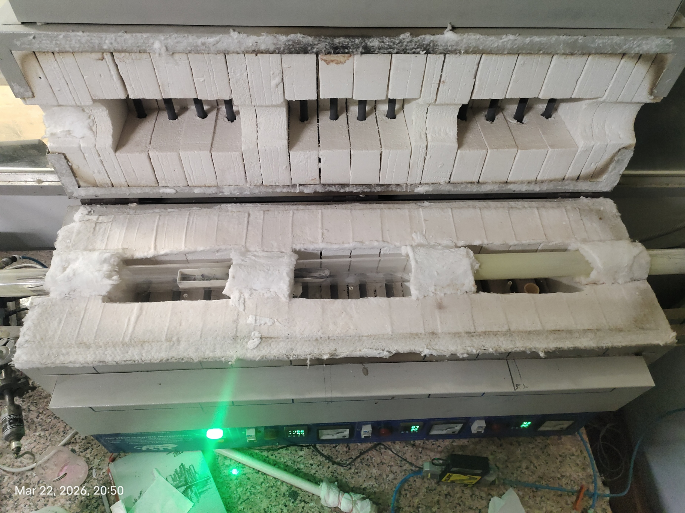

Complete laboratory guide to thin film growth
Email: example@mail.com
Home website:
Click Here
Chemical Vapor Deposition (CVD) is a thin film deposition technique in which gaseous precursor molecules undergo chemical reactions on a heated substrate surface to form a solid material layer. important links you can click this link.
You can describe your research, ideas, or anything. This layout is flexible and simple.
In a CVD process, volatile chemical precursors are transported into a reaction chamber. Thermal energy or Plasma activates chemical reactions near the substrate surface, leading to nucleation and thin film growth. important links you can click this link.
Chemical Vapor Deposition (CVD) is a technique that produces high-quality, dense thin films or coatings by initiating a chemical reaction of gaseous precursors on a heated substrate surface within a vacuum chamber. It involves supplying precursors, triggering reactions via heat or plasma, and depositing solid products while removing gaseous by-products.
Chemical vapor deposition (CVD) can deposit evaporated reactants on the surface to form thin-films. For example, graphene is the most widely recognized product of CVD. So, what is the principle of CVD?